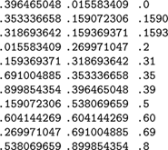

C++ Programming Robert Sedgewick - Princeton University Addison Wesley Professional Algorithms in C++, Parts 1–4: Fundamentals, Data Structure, Sorting, Searching, Third Edition C++ Programming Robert Sedgewick - Princeton University Addison Wesley Professional Algorithms in C++, Parts 1–4: Fundamentals, Data Structure, Sorting, Searching, Third Edition
Chapter Ten. Radix Sorting
For many sorting applications, the keys used to define the order of the records for files can be complicated. For example, consider the complex nature of the keys used in a telephone book or a library catalog. To separate this complication from essential properties of the sorting methods that we have been studying, we have used just the basic operations of comparing two keys and exchanging two records (hiding all the details of manipulating keys in these functions) as the abstract interface between sorting methods and applications for most of the methods in Chapters 6 through 9. In this chapter, we examine a different abstraction for sort keys. For example, processing the full key at every step is often unnecessary: to look up a person's number in a telephone book, we often just check the first few letters in the name to find the page containing the number. To gain similar efficiencies in sorting algorithms, we shall shift from the abstract operation where we compare keys to an abstraction where we decompose keys into a sequence of fixed-sized pieces, or bytes. Binary numbers are sequences of bits, strings are sequences of characters, decimal numbers are sequences of digits, and many other (but not all) types of keys can be viewed in this way. Sorting methods built on processing numbers one piece at a time are called radix sorts. These methods do not just compare keys: They process and compare pieces of keys.
Radix-sorting algorithms treat the keys as numbers represented in a base-R number system, for various values of R (the radix), and work with individual digits of the numbers. For example, when a machine at the post office processes a pile of packages that have on them five-digit decimal numbers, it distributes the packages into ten piles: one having numbers beginning with 0, one having numbers beginning with 1, one having numbers beginning with 2, and so forth. If necessary, the piles can be processed individually, by using the same method on the next digit or by using some easier method if there are only a few packages. If we were to pick up the packages in the piles in order from 0 to 9 and in order within each pile after they have been processed, we would get them in sorted order. This procedure is a simple example of a radix sort with R = 10, and it is the method of choice in many real sorting applications where keys are 5- to 10-digit decimal numbers, such as postal codes, telephone numbers or social-security numbers. We shall examine the method in detail in Section 10.3.
Different values of the radix R are appropriate in various applications. In this chapter, we focus primarily on keys that are integers or strings, where radix sorts are widely used. For integers, because they are represented as binary numbers in computers, we most often work with R = 2 or some power of 2, because this choice allows us to decompose keys into independent pieces. For keys that involve strings of characters, we use R = 128 or R = 256, aligning the radix with the byte size. Beyond such direct applications, we can ultimately treat virtually anything that is represented inside a digital computer as a binary number, and we can recast many sorting applications using other types of keys to make feasible the use of radix sorts operating on keys that are binary numbers.
Radix-sorting algorithms are based on the abstract operation "extract the ith digit from a key." Fortunately, C++ provides low-level operators that make it possible to implement such an operation in a straightforward and efficient manner. This fact is significant because many other languages (for example, Pascal), to encourage us to write machine-independent Programs, intentionally make it difficult to write a program that depends on the way that a particular machine represents numbers. In such languages, it is difficult to implement many types of bit-by-bit manipulation techniques that actually suit most computers well. Radix sorting in particular was, for a time, a casualty of this "progressive" philosophy. But the designers of C and C++ recognized that direct manipulation of bits is often useful, and we shall be able to take advantage of low-level language facilities to implement radix sorts.
Good hardware support also is required; and it cannot be taken for granted. Some machines (both old and new) provide efficient ways to get at small data, but some other machines (both old and new) slow down significantly when such operations are used. Whereas radix sorts are simply expressed in terms of the extract-the-digit operation, the task of getting peak performance out of a radix sorting algorithm can be a fascinating introduction to our hardware and software environment.
There are two, fundamentally different, basic approaches to radix sorting. The first class of methods involves algorithms that examine the digits in the keys in a left-to-right order, working with the most significant digits first. These methods are generally referred to as most-significant-digit (MSD) radix sorts. MSD radix sorts are attractive because they examine the minimum amount of information necessary to get a sorting job done (see Figure 10.1). MSD radix sorts generalize quicksort, because they work by partitioning the file to be sorted according to the leading digits of the keys, then recursively applying the same method to the subfiles. Indeed, when the radix is 2, we implement MSD radix sorting in a manner similar to that for quicksort. The second class of radix-sorting methods is different: They examine the digits in the keys in a right-to-left order, working with the least significant digits first. These methods are generally referred to as least-significant-digit (LSD) radix sorts. LSD radix sorts are somewhat counterintuitive, since they spend processing time on digits that cannot affect the result, but it is easy to ameliorate this problem, and this venerable approach is the method of choice for many sorting applications.
Even though the 11 numbers between 0 and 1 on this list (left) each have nine digits for a total of 99 digits, we can put them in order (center) by just examining 22 of the digits (right).

|